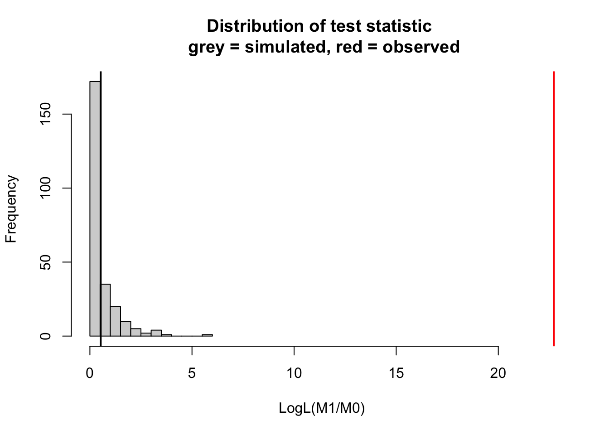

ANOVA stands for ANalysis Of VAriance. The basic idea is to find out how much of the signal (variance) is explained by different factors. We had already short introduced ANOVA in the section on categorical predictors.
The problem with explaining ANOVA is that the term is overfraught with historical meanings and explanations that are no further relevant. It used to be that ANOVA is a stand-alone method that you use for experimental designs with different treatments, that ANOVA assumes normal distribution and partitions sum of squares, that there are repeated-measure ANOVAS and all that, and those varieties of ANOVA partly still exist, but in general, there is a much simpler and general explanation of ANOVA:
Modern explanation: ANOVA is not a statistical model, but a hypothesis test that can be performed on top of any regression model. What this test is doing is to measure how much model fit improves when a predictor is added, and if this improvement is significant.
3.1.1 An example
As an example, here is a ANOVA (function aof(() performed on the fit of a linear model
fit =lm(Ozone ~ Wind + Temp, data = airquality)summary(aov(fit))
Df Sum Sq Mean Sq F value Pr(>F)
Wind 1 45284 45284 94.81 < 2e-16 ***
Temp 1 25886 25886 54.20 3.15e-11 ***
Residuals 113 53973 478
---
Signif. codes: 0 '***' 0.001 '**' 0.01 '*' 0.05 '.' 0.1 ' ' 1
37 observations deleted due to missingness
In the standard ANOVA for the LM, model fit is measured by the reduction in residual sum of squares. Let’s look at the example above. In the ANOVA table above, we (virtually) start with an intercept only model. Now, what the table tells us is that adding Wind to the model reduces the Sum Sq. by 45284, and adding also Temp reduces the Sum Sq by another 25886, which leaves us with 53973 residual sum sq. From this, we can also conclude that the total variance of the response is 53973 + 25886 + 45284 = 125143. Let’s check this:
sum((fit$model$Ozone -mean(fit$model$Ozone))^2)
[1] 125143.1
Thus, we can conclude that the R2 explained by each model component is
53973/125143# Wind
[1] 0.4312906
25886/125143# Temp
[1] 0.2068514
45284/125143# Residual
[1] 0.361858
Moreover, the ANOVA table performs tests to see if the improvement of model fit is significant against a null model. This is important because, as mentioned before (particular in the chapter on model selection), adding a predictor always improves model fit.
To interpret the p-values, consider that H0 = the simpler model is true, thus we test if the improvement of model fit is higher than what we would expect if the predictor has no effect.
3.1.2 Customizing the partitioning
There are a number of cases where it can make sense to perform an ANOVA for larger parts of the model. Consider, for example, the following regression:
fit =lm(Ozone ~ Wind +I(Wind^2) + Temp +I(Temp^2), data = airquality)
Maybe, we would like to ask how much variance is explained by Wind + Wind^2, and how much by Temp + Temp^2. In this case, we can perform custom ANOVA, using the anova() function that we already introduced in the section on model selection via LRTs.
m0 =lm(Ozone ~1, data = airquality)m1 =lm(Ozone ~ Wind +I(Wind^2) , data = airquality)m2 =lm(Ozone ~ Wind +I(Wind^2) + Temp +I(Temp^2), data = airquality)anova(m0, m1, m2)
Analysis of Variance Table
Model 1: Ozone ~ 1
Model 2: Ozone ~ Wind + I(Wind^2)
Model 3: Ozone ~ Wind + I(Wind^2) + Temp + I(Temp^2)
Res.Df RSS Df Sum of Sq F Pr(>F)
1 115 125143
2 113 64360 2 60783 81.397 < 2.2e-16 ***
3 111 41445 2 22915 30.686 2.464e-11 ***
---
Signif. codes: 0 '***' 0.001 '**' 0.01 '*' 0.05 '.' 0.1 ' ' 1
3.2 Fundamental issues in ANOVA
There are three basic problems that we will come back again when generalizing this principle across a range of models:
How should we measure “improvement of model fit”. Traditionally, improvement is measured by the reduction of the residual sum of squares, but for GLMs, we will have to expand this definition
How should we test if the improvement in fit is significant? For simple models, this is not so much a problem
How should we partition variance if predictors are collinear, and thus the order in which predictors are included matters
Should we correct for complexity?
Let’s look at the problem one by one:
3.2.1 Measuring model fit
The definition of model fit via sum of squares makes sense as long as we work with linear models.
For GLMs, this definition doesn’t make sense any more. A number of so-called pseudo-R2 metrics have been proposed. Most of them are based on the likelihood (as a measure of model fit) and try to recover as far as possible the properties of an R2 for the linear model.
A common metrics is McFadden pseudo-R2, which is defined as 1-[LogL(M)/LogL(M0))], where M is our model, and M0 is an intercept only model.
3.2.2 Testing if the improvement is significant
The test used in our example before is an F-test. The F-test is used for models that assume normal distribution. The F-test can be interpreted as a special case of a likelihood ratio test (LRT), which we already used in the chapter on model selection. An LRT can be used on two nested models, with M0 being the simpler model, and makes the following assumptions:
H0 = M0 is true
Test statistic = likelihood ratio -2 [MLE(M0)/MLE(H1)]
Then, under relatively broad conditions, the test static will be chi-2 distributed, with df = difference residual df (parameters) of the models M1, M0
This setup works for LMs and GLMs, but runs into problems when the definition how many df a model has is unclear. This is in particular the case for mixed models. In this case, one can resort to simulated LRTs. Simulated LRTs are a special case of the boostrap, which is a very general and popular method to generate nonparametric confidence intervals and null distributions. We will talk in detail about these methods in the chapter on nonparametric methods, but because this method is crucial for mixed models, I want to shortly explain it already here:
The difference between a parametric and a nonparametric test is that the latter does not make assumptions about the test statistic (point 3 above), but somehow generates the latter from the data. The parametric bootstrap does this in the following way:
Simulate data from H0 (= the fitted model M0)
Re-fit M0 and M1, and calculate likelihood ratios
Repeat n times to get an idea about the expected increase in likelihood when moving to M1 under the assumption that M0 is correct
library(DHARMa)
This is DHARMa 0.4.6. For overview type '?DHARMa'. For recent changes, type news(package = 'DHARMa')
m0 =lm(Ozone ~ Wind , data = airquality)m1 =lm(Ozone ~ Wind + Temp, data = airquality)simulateLRT(m0, m1)

DHARMa simulated LRT
data: m0: m0 m1: m1
LogL(M1/M0) = 22.723, p-value < 2.2e-16
alternative hypothesis: M1 describes the data better than M0
# for comparisonanova(m0, m1)
Analysis of Variance Table
Model 1: Ozone ~ Wind
Model 2: Ozone ~ Wind + Temp
Res.Df RSS Df Sum of Sq F Pr(>F)
1 114 79859
2 113 53973 1 25886 54.196 3.149e-11 ***
---
Signif. codes: 0 '***' 0.001 '**' 0.01 '*' 0.05 '.' 0.1 ' ' 1
3.2.3 Partitioning variance if order matters
Another key problem in ANOVA, and a source of much confusion, is how to deal with the fact that often, the order in which model components are added matters. Compare the results of our previous ANOVA with this one, where I only flipped the order of Temp and Wind:
fit =lm(Ozone ~ Temp + Wind, data = airquality)summary(aov(fit))
Df Sum Sq Mean Sq F value Pr(>F)
Temp 1 61033 61033 127.78 < 2e-16 ***
Wind 1 10137 10137 21.22 1.08e-05 ***
Residuals 113 53973 478
---
Signif. codes: 0 '***' 0.001 '**' 0.01 '*' 0.05 '.' 0.1 ' ' 1
37 observations deleted due to missingness
The result is markedly different, and reason is that the aov function performs a so-called type I ANOVA. The type I ANOVA adds variables in the order in which they are in the model formula, and because Temp and Wind are collinear, the variable that is added first to the model will absorb variation from the other, and thus seems to explain more of the response.
There are other types of ANOVA that avoid this problem. The so-called type II ANOVA shows for each variable only the part that is uniquely attributable to the respective variable
Here is an overview of the situation for 2 predictors A and B and their interaction. The upper left figure corresponds to the case where we have no collinearity between either of those variables. The figure on the top right (and similarly types I - III) are the three possible types of ANOVA for variables with collinearity. The “overlap” between the circles depicts the shared part, i.e. the variability that can be expressed by either variable (due to collinearity). Note that the shares in Type II, III do not add up to 1, as there is a kind of “dark variation” that we cannot securely add to either variable.
Excercise
Try out the difference between type I, II, III ANOVA for the airquality data set, either for the simple Wind + Temp model, or for more complicated models. If you want to see the effects of Type III Anova, you need to add an interaction (see next section).
A last problem is that model components with more complexity (df) will always tend to explain more variance. We can see this when a model with a separate mean per day:
m =lm(Ozone ~as.factor(Day) , data = airquality)summary(aov(m))
Df Sum Sq Mean Sq F value Pr(>F)
as.factor(Day) 30 41931 1398 1.428 0.104
Residuals 85 83212 979
37 observations deleted due to missingness
The ANOVA tells us that this variable Day explains around 1/3 of the variation in the data, although it is not even significant. Because of this problem, the summary.lm() function reports a raw and an adjusted R2 for each model. The adjusted R2 tries to correct the R2 for the complexity of the model.
Here, we see that the adjusted R2 is considerably lower than the raw R2, even though not zero.
In general, reliably adjusting R2 components for complexity in an ANOVA is very complicated. I would recommend that
If you report raw components (which is the default in most papers), consider that this is a description of your model, not an inference about the true variance created by the respective factor, and include in your interpretation that variables or model components with more df will always tend to explain more variance
Alternatively, if the true variance is really crucial for your study, you can adjust R2 by a null expectation, similar to the parametric bootstrap for the LRT. However, because you subtract what is expected under H0, this will be a conservative estimate.